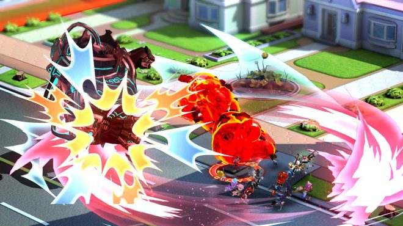

The Wonderful 101

A Kamiya passion project and one of action gaming's finest moments.
A truly unique blend of tokusatsu/super sentai hot-bloodedness, Pikmin-esque tiny characters, and creative combat mechanics.
One of the few games to properly utilize the Wii U hardware with its dynamic "Wonder Liner" weapon drawing system.
- Studio: PlatinumGames
- Publisher: PlatinumGames
- Director: Hideki Kamiya
- Year: 2013
Fun Facts
- Despite being one of the best games ever made, no one played it. Onimusha.
- Though it is primarily an action game, the gameplay does occasionally take detours into minigames reminiscent of other games, such as Space Harrier.
- The game features a very drawn-out and distant camera, highly unusual for action games.